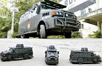

Achei bem legal (apesar de simples), e ia colocar aqui para conhecimento de todos. Só que como ele fez apenas a réplica de uma viatura da polícia de São Paulo, eu ia entrar em contato e sugerir outros modelos para divulgar tudo junto.
Além disso procurei figuras mais detalhadas pela internet, mas não achei muita coisa.
Porém, estava atualizando minha leitura diária dos jornais quando deparei-me com esta notícia do jornal O Dia online, noticiando sobre um rapaz que faz réplicas do veículo blindado usado pelo BOPE, carinhosamente chamado de Caveirão. 
Dá uma olhada, o cara é autista, tem problemas de visão e ainda assim tem um talento invejável, e faz réplicas perfeitas dos blindados usando materiais como papel jornal, verniz e cola. Muito sinistro !
Ah, desses aí eu quero um também, mas vai ser difícil pois o artista e admirador da Polícia produz os bichinhos só por prazer e quando quer.
Achei muito legal e queria compartilhar com vocês. Ah, clique aqui para baixar o arquivo com a imagem para imprimir e montar a viatura policial de SP. Divirta-se relembrando os tempos de jardim de infância ;)
Editado: O Alexandre já tinha falado do assunto lá no Diario de um PM mas eu, relapso que sou, coloquei aqui também pela empolgação, e só depois vi a outra matéria. Ah, tá bom, o negócio é divulgar...